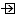

CP 1
Direct link toward element page
Titles referencing the Element
 ComponentPort - CP 1
ComponentPort - CP 1 ComponentPort - CP 1
ComponentPort - CP 1-  ComponentPort - CP 1
- ComponentPort - CP 1
- ComponentPort - CP 1
- ComponentPort - CP 1
- ComponentPort - CP 10
- ComponentPort - CP 1
- ComponentPort - CP 1
- ComponentPort - CP 1
Lists referencing the Element
 SystemComponent - LISE
SystemComponent - LISE Part - Astronaut : Astronaut
Part - Astronaut : Astronaut SystemComponent - Astronaut
SystemComponent - Astronaut- Part - Control Centre : Control Centre
- Part - HLS : HLS
- SystemComponent - Lander
- SystemComponent - Lunar Surface vehicle
- Part - Other Communication relay : Other Communication relay
- SystemComponent - HLS
- SystemComponent - Lunar environment
- Part - Lunar environment : Lunar environment
- SystemComponent - Other Communication relay
- SystemComponent - Rover
- SystemComponent - Control Centre
- Part - Lunar Surface vehicle : Lunar Surface vehicle
 Part - LISE : LISE
Part - LISE : LISE- Part - Lander : Lander
- Part - Rover : Rover